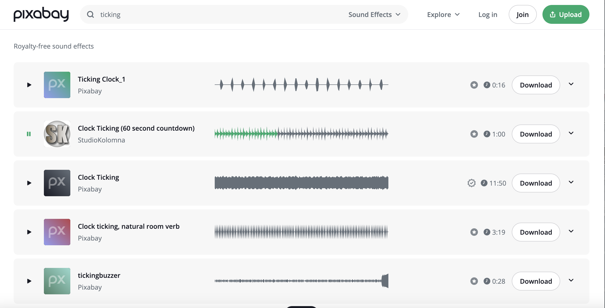

Evaluating Website Video
Provided below of two screen recordings of sites from awwwards.com which utilise video backgrounds as a visual aid.
Planet-x by The Bang
Planet-x is a treasure hunt shooter game which involves spending X-tokens on any prize in the
X-Vault. - access to shop online.
Dolphyn Hydrogen by Hlabs
Dolphyn Hydrogen is a company developing low carbon alternatives to fossil fuels.
Portfolio of video content
Using OPENSHOT to edit a video of a shopping mall - purpose: to draw attention to the statistic, on average women spend over 20,000 hours shopping. Indicating there are other ways to spend time, another reason for considering a digital fashion alternative.


Audio and Video resources were selected from Pixabay.com
Final Result